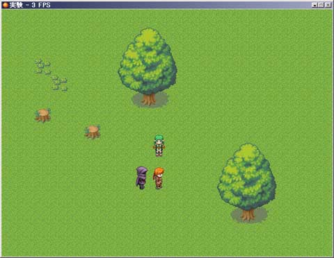

シルバーセカンド開発日誌
通販でXPが届いたので認証して起動！
新プロジェクト作成！テキトーにマップ作って実験しました！
３FPS↓

※FPS＝1秒間に変わる画面のコマ数。
TVアニメなどでは秒間30とか20枚。
RPGツクールXPの基本値は20FPS
先生、↑だけのマップにイベント置いただけなのに重すぎます。
しかもときどき0FPSになることもあって、ちょっぴり不安です。
まずは軽いスクリプト作る方法から勉強しないとどうにもなりません。
サンプルゲームは全体的にちょろっとやってみたのですが、
AlestianStoryのスクリプトなんかは色々と参考になりそうな部分が
多そうな気がしました。ゲーム開始時にデモがあったり、
アイテム入手ウィンドウがオリジナルだったり。
で、RGSSを見てて思ったんですが、
これって実は半歩移動とかフツーにできそうな気がします。
あと不思議のダンジョンシリーズみたいに、斜め移動や斜め向きの時の
キャラグラフィックを表示させたりもイケそうな予感。
なんせキャラが一歩動いたりマップのタイルグラフィック並べるのも
全部RGSSがやってるので、いじればいくらでも改造可能です。
早く使いこなせるようになりたいなあ……。
あと起動時の「ご使用のCPUは動作水準を満たしていません」を
出なくするようにする方法ってないんでしょうか。
テストプレイのたびに出てくるわ
ツクールXP起動時に勝手に毎回出てくるわで
すごく作業に支障があります、フンガー。
■
2004-07-24 (土) RPGツクールXP▼
注文しましたよRPGツクールXP！
通販ですから届くまでは間がありますが、
スクリプトやらアルファブレンド（透明さの調整）やら
面白そうな機能が色々付いているので
楽しそうな事がたくさんできそうです。
Rubyによるファイル入出力も可能っぽいので
データを交換して他の人のデータと対戦とかできたり
下手するとネットに繋げてデータのやり取りができるかもなど
期待は膨らむばかり。もちろん機能に頼りすぎるだけじゃ
面白いゲームは作れないので、いつでも発想が一番。
それはそうとシルフェイド幻想譚、
ぼちぼちゴールが見えかけてきました。
斬新さで勝負というよりは半分データ量勝負のゲーム、
たぶんコンテストなんかに出しても
すごくウケが悪そうな予感ですが、
RPGに飽きやすい人にも少しでも面白いと思ってもらえるよう、
丹誠込めて作ってるつもりです。あと何ヶ月かかるか
分かりませんが、最後まで頑張ります。
ツクールXP体験版動かしてみましたがオモーいです。
来年くらいには、プレイヤーの方々のCPUが4桁（ギガクラス）に
なってるのかなあ……。
ちなみに現在、研究でアワアワ言ってばかりの日々を送っております。
今の生活に早く慣れたい＆時間が取れるようになりたいモンです。
環境適応能力には自信がある方だと思っていたけれど
やればやるだけ後からどんどん課題が出てくる毎日、うーん。
でも、もちろんどんな事にでも一生懸命頑張るのが心情！
創作は、作った人の精神・性格ってのがそのまま出てきます。
どんな時でも悪い妥協ばっかりしようとせず、
手を抜かない精神を持つことができれば
作ったゲームでもそのまま結果として現れて来ると自分は思ってます
来月発売のRPGツクールXPがかなり多機能そうで
（というよりRGSSというプログラム部分のおかげで
システムの深い部分から作れるらしい）、
発売される前からちょっと期待しております。
ファイルの読み書きが自由にできるのなら
構想中のゲームが楽に作れそうな予感で、楽しみです。
幻想譚は何だかんだいって少しずつ進行中です。
別に作ろうと思ってるシェアウェア（現代版シル見）の
方も裏で色々考え中。 今日の一枚↓

現代物にも使えるかなぁと思いつつ
非病弱版シーナ。現代日本物なら
姓か名が椎名（シイナ）でしょうか→
他に日本人の名前として互換性が
ありそうなのは、スズナ（鈴菜）と
セト（瀬戸）ぐらいですかねぇ。
さすがにエシュターとかガゼルを
当て字にすると「夜露死苦！」な
状態になってしまいますし。
ADVでの日本人系の名前は、
漢字で表記すると、どうにも
読みが分かりづらくなるのが欠点。
でも漢字をカタカナで表記すると、
名字か名前が出しにくくなるとか、
色々と欠点があります。例えば、
田中一郎さんは「タナカ」か
「イチロウ」だけで表記されたり
する事も割と多いと思います。
やっぱ姓名の分出すと長いから？
両方付けた、漢字＋フリガナで
表すのがいいのかな……。
表記の方法も、割と考え所です。 今日の一枚↓

←シル見用キャラクター、
特殊部隊員っぽく。
下辺りがテキトーなのは
顔グラフィックにすると
見えなくなるからですね。
で、本日は絵だけ。
現在シル見のストーリーの
ネタをまとめ中です。 今日の一枚↓

最近はシル見のネタを考え中。
色々考えた末に思ったのですが、
ギャグが大分弾切れしているので、
こうなったら後半は真面目なお話で
攻めようかなと考えを転換しつつあります。
もちろんギャグもあるだけ使いますが、
それ中心にはしない、って意味で。
今まではただ単に「楽なように」作ったら
ギャグまみれになっただけなのですが、
今は状況は逆で、ギャグが楽して
作れなくなった代わりに、
他の方面（ストーリーとか）の
ネタが腐るほど余ってる始末。
仕方ないので、ギャグにこだわりすぎるのは止めて、
やりやすいように作っちゃおうかなぁと。
今までもずっとそうでしたし。
「後半ギャグがつまらなくなった」の意見はもう覚悟で、
今度は「話が面白かった」を目指そうと思います。
どうせシル見は、元より半分実験作ですし、
料理も同じ味ばっかりだと飽きますから。
ただ、面白くする努力は常に忘れずに。 ■
2003-09-05 (金) ドット絵 [秋も近いのに暑い！]▼
シルフェイド探求紀行のドット絵制作中。
絵描くよりも遙かに時間がかかってしまいます。
さすが職人芸と呼ばれるだけありますな……
一筋縄ではいきませんのう。
やはり、割と量産しやすい「絵」を中心にして、
ゲームを構成する事を先に考えた方がいいなぁ……。
顔絵と背景とフィールド画面と主人公達のドット絵と、
あと何が必要なのか？面白い部分さえ削がなければ、
出来る限り手抜きでいいと思うのですけれど、
どの辺の手を抜くかが、これまた難しい。 現在、シル見シークエンス6とシル探の構想も立てつつ、
シェア作品にするかもしれない現代物ADV（仮）も構想中。
というか単純にネタの捌け口と言うのかもしれませんが……
現代物は日常生活ネタがそのまま使えるので、半自動的に
ネタが増えます。その中でシル見に使えそうなネタは
シル見に全部回し、余りの現代物特有のネタ（CM、携帯、
TV、自動車、電車などなど）は現代物の方で使うつもりで
残ったネタをコソコソかき集めています。
システムはシル見のものをほぼ流用するつもりです。
世界観というか話の状況も似ており、
シル見で使えなかったネタをこっちで披露するという、
「裏シル見」という感じにする予定です。
が、単純に残飯かき集めたゲームなワケで、
完成するかどうかも全然未定。
まあ、構想するだけならタダですし、いつも一つの事ばかり
考えているワケでもありませんから……。
で、今日の一枚↓
シル探は未だ長い構想段階の途中。
シル見6はネタ集め中ですが、作れる部分はボチボチ
作り始めてます。
■
2003-08-31 (日) これで最後？ 29日目 [雨…]▼ なんだかんだ言って、本日付けで29日毎日更新達成です。
以後は、気が向いたら絵日記を更新、という方向で
行こうかなと考え中。
去年なんかよりも、一日に使えるエネルギーがずっと増えてると
感じます。というより、効率が良くなってきたのでしょうか。
絵を描くのも、ゲームを作るのも、慣れると
意外と辛くなくなって来ました。最初は顔絵を
数枚描いただけでも「あー疲れた」と感じていたのに、
今はだいぶ楽です。この夏の間で、少しは目に見える成長が
あればいいんですが……。
何はともあれ、以後も邁進。
社会の義務も果たしつつ、そして趣味もしつつ。
で、今日の一枚↓

←シルフェイド見聞録用
シーナの祖母ナズナの原案
それにしても、この夏は、腹の底から笑えるような事が
あんまり無かったような……就職とかどうすっかなぁ…と
割と真剣に悩んでしまって、笑ってるどころじゃないのかも。
受験は受かったら先が気楽ですが、就職は仮に受かってからも
本当に死ぬほど働かなきゃダメな所が非常に多いみたいです。
就職率自体は悪いし、仕事が辛くてやめていく方の「離職率」も
割と高くなってるそうで、どうにもこうにも……。
サラリーマンのお仕事は最近、実力（成果）主義へと
変化しつつあります。といいつつサービス残業（お給料の出ない
残業の事）が一日4時間や5時間以上の企業も珍しくなく、
しかもヘボかったらどのみち首が飛びますから、
昔みたいに割と安定した職業ってわけではないんですなぁ……
今の狙い目は公務員？サラリーマンでも、出来るなら
「自分に向いてること」で仕事したいものですが……。
今の世の中、その望みも贅沢なのかもしれません。
景気が良くなるといいんだけど、最近の経済状況見ても
良くなる気配が無いしねぇ……欲しいものが、全部揃った
社会になりつつあるのかもしれません。
「日本は『希望』以外なら何でもあるよ！」
という冗談があったのを思い出します。
電化製品だのパソコンだのも、そろそろ進化の必要性が
薄れてるし。これからの社会の需要って何でしょう？
そもそも生半可な仕事だと、いつか全部
機械にやらせりゃ済むようになっちゃうだろうしなぁ……
30・40年後も安定して働き続けるには
どうすればいいのか？難しい課題です。
それ考えると、本気で作家になるのも悪くないかもしれません。
……まあ、とにかく日々精進。
それだけは何があっても変わらず。
Copyright © SmokingWOLF / Silver Second
 カテゴリ: 開発日誌
カテゴリ: 開発日誌 カテゴリ: 開発日誌
カテゴリ: 開発日誌